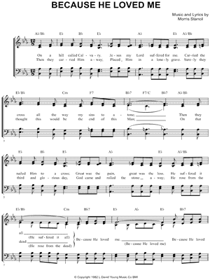
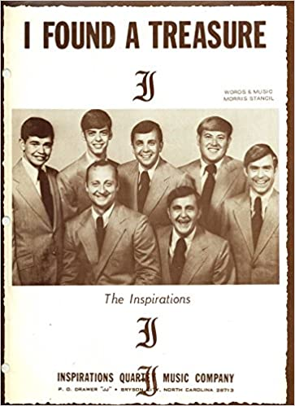

1035 0964 Because He Loved Me So _M. Stancil SE
|
¡@ |
¡@ |
1. On a hill called Calvary, Jesus my Lord suffered for me.
Carried the cross all the way my sins to atone.
Then they nailed Him to a cross, great was the pain and the loss
He suffered it all, (He suffered it all)
Because He loved me. (Because He loved me.)CHORUS:
Because He loved me, my Savior died, on the cross was crucified
No greater love for mortal man has ever been known.
Oh praise His dear name,
He loved me so, now I am His, He's mine, I know
He suffered it all, (He suffered it all)
Because He loved me. (Because He loved me.)
2. Then they carried Him away, placed Him in a lonely grave
Surely they thought that this would be the end of this man.
But on that third and glorious day,
God came and rolled the stone away,
He rose from the dead (He rose from the dead)
Because He loved me (because He loved me).
CHORUS:
Listen to the tune
|
¡@ |
|
¡@ 
|
|
¡@ |
¡@ |
Triumphant Quartet sings Because He Loved Me https://youtu.be/l55MO6_zItc
Primitive Quartet BECAUSE HE LOVED
https://www.youtube.com/watch?v=JWKn-lvm5yo
This song was written by Morris Stancil, and was recorded by the Triumphant
Quartet¡K included on their album, The
Greatest Story.
The Triumphant Quartet (formerly Integrity Quartet until 2005) is a Southern
Gospel group that performed at The Miracle Theater in Pigeon Forge, Tennessee.
They sang at the theater from 2003¡V2005, when it was known as The Louise
Mandrell Theater. They now travel on a full-time concert schedule.
The group consists of David Sutton (tenor), Clayton Inman (lead), Scott Inman
(baritone), and Eric Bennett (bass). They are known for being the only
established full-time Southern Gospel quartet to never change membership among
the vocalists. Several of their songs have received nominations for Favorite
Song of the Year (in 2004, and each year from 2006-2014. The group was bestowed
the honor of the ¡§Favorite Traditional Male Quartet¡¨ award by the readers of
Singing News magazine from 2009-2014.
This song looks back to the death of Jesus¡K and reminds us Jesus did what He did
because He loves us.
Bible Reference¡K John
3:16; 10:11; Ephesians 5:2b; 1John 3:16; 4:16; Revelation 1:5
On a hill called Calvary, Jesus my Lord suffered for me;
carried the cross all the way, my sins to atone.
Then they nailed Him to that cross.
Great was the pain and the loss; He suffered it all because He loved me.
CHORUS:
Because He loved me, my Savior died; on the cross, was crucified.
No greater love for mortal man has ever been known.
Oh, praise His dear name; He loves me so.
Now I am His; He¡¦s mine. I know He suffered it all because He loved me.
Then they carried Him away; placed Him in a lonely grave.
Surely, they thought that this would be the end of this Man.
But, on the third and glorious day, God came and rolled the stone away;
He rose from the dead because He loved me. (CHORUS)
TAG:
Oh, praise His dear name; He loves me so.
Now I am His; He¡¦s mine. I know He suffered it all because He loved me.
Because He loved me¡K Because He loved me.
¡@https://thescottspot.wordpress.com/2018/11/10/because-he-loved-me-2013/
https://funeralinnovations.com/obituary/629397/Morris-Stancil/
Morris Junior Stancil, age 78, of Gainesville, GA passed away December
30, 2021. He was a member of Riverside Baptist Church. He was a well known
gospel song writer, singer, and piano player. His most notable song written was
Because He Loves Me. He is survived by his son, Greg Stancil, of Gainesville, GA
and brother, Marcus Stancil, of Cumming, GA. The family will receive friends
Wednesday from 2:00 PM to 9:00 PM and Thursday from 9:00 AM to 11:00 AM at the
funeral home. Ingram Funeral Home & Crematory, Cumming, Georgia in charge of
arrangements

https://www.youtube.com/playlist?list=PLAF20BFB1F6905005